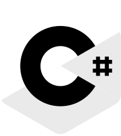
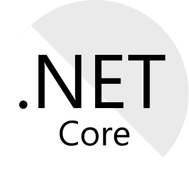
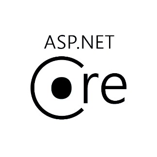
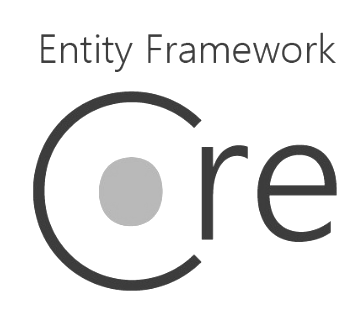
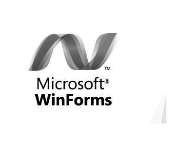

THE PORTFOLIO OF
HAMZI ALSHEIKH
SOFTWARE DEVELOPER /
MECHATRONICS ENGINEER
A highly motivated software developer with a passion for perfection. i have expertise in the different parts of the stack, my language of choice is C-Sharp, i started out with Desktop software development using Microsoft Windows Forms and Windows Presentation Foundation using XAML backed up by SQL Server and PostgreSQL databases then transitioned to Server-Client Technologies using the Windows Communication Foundation and finally i landed in the Web Development world using ASP.Net Core as a Back-end Framework while working with Razor Pages, React and Angualr as a Front-End Frameworks.
Technologies I Use
C-Sharp
C# is my language of choice, i have two years of experience in it, during those years i developed various solutions for the different parts of the Microsoft stack.
.Net Framework
Since i work with C#, the .Net Framewok is the core of most of my projects, i am always following the new releases of the framework to explore the features that will be usefull for my next project.
.Net Core
Since the first release of .Net Core i have been following it's development, my first contact with this framework was by using the .Net Core based web framework: ASP.Net Core which was very pleasent to work with.
ASP.Net Core
ASP.Net Core is my framework of choice for web application development, it's fast, open-source and cross-platform! a perfect combination, i have been working with this framework since the first release which made me gain a solid experience in it, i've deployed a couple of commercial applications using this framework in addition to a variety of personal projects.
Entity Framework Core
Entity Framework Core is the ORM i am using to communicate with databases, i am also planning to try dapper and XPO from DevExpress
React
React is the Front-End Framework that i am currently working with, i am still polishing my skills in it hoping to deploy a production app in the near future.
SQL Server
SQL Server is the database system i usually use in my web apps, i haven't really found the need for a feature that SQL Server didn't offer so most of my projects depend on it.
PostgreSQL
PostgreSQL is another database system that i use in my work, i have done a couple of personal projects with PostgreSQL.
WinForms
WinForms is the library i use for Desktop application development, Windows Forms was my starting point in the programming world, i built ALOT of tools using this library and there are a couple of production apps available inhere.
In Addition To